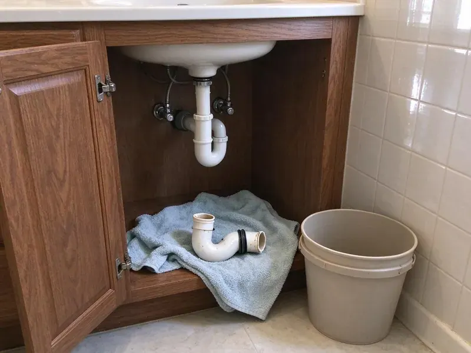

Copper Pipe Leak Repair in Appleton, WI
When you need professional copper pipe leak repair in Appleton, WI, HKV Plumbing delivers durable solutions with skilled plumbers.
- Repipe Options When Needed
- Expert Copper Soldering
- Durable Pipe Repair
- Thermal Imaging Leak Detection
Stop Copper Leaks Before They Worsen in Appleton, WI.
Contact HKV Plumbing now for a free estimate and dependable service.
Reliable Copper Pipe Leak Repair Services for Appleton, WI Homes
At HKV Plumbing, we understand the challenges copper pipes face in Appleton, WI, including issues related to water chemistry and ground movement. Water softeners are a common feature in many Wisconsin homes, helping protect water heaters, fixtures and appliances from scale. We offer full-service copper pipe leak repair, so your system is fixed right the first time and future problems are prevented.
Our expertise includes:
- Expert repair for pinhole leaks, corrosion and burst lines.
- Expert soldering and brazing for durable copper pipe repairs.
- Section replacement for severely damaged copper piping.

Additional Plumbing Repair Services in Appleton, WI
We offer expert plumbing repair services across Appleton, WI to fix leaks, restore flow, and keep your system running smoothly.


Customers
Why Choose HKV Plumbing for Copper Pipe Leak Repair in Appleton, WI?
Choosing HKV Plumbing means you're getting experienced professionals who understand the details of copper plumbing systems. We focus on delivering repairs that stand the test of time, minimizing future issues for your home.
- Honest Advice, We tell you when repeated pinholes mean a repipe will save you money.
- Advanced Tools, We use non-invasive leak detection technology to pinpoint leaks without needless damage.
- Local Expertise, Our team understands the plumbing challenges in Appleton, WI, including how water quality affects copper.
Citywide Coverage
From downtown to the farthest suburbs, HKV Plumbing is your go-to for expert copper pipe leak repair throughout Appleton. We make it our mission to reach you quickly and resolve your plumbing issues efficiently.
Experienced Team
The HKV Plumbing team brings years of specialized experience to every copper pipe leak repair job. Our licensed technicians are experts in diagnosing complex leaks and implementing effective, long-lasting solutions for your plumbing system.
Safety-First Approach
Safety is essential in all our copper pipe leak repair projects, with strict adherence to all local plumbing codes and industry standards in Wisconsin. We take every precaution to protect your property and our team during the repair process.
Trusted Certified Appleton Plumbing Services Professionals
At HKV Plumbing, we take pride in providing certified plumbing services throughout Appleton, WI. Backed by recognized industry credentials, our experienced plumbers combine technical skill with genuine customer care. Whether it is repair, installation, or maintenance, we follow strict safety and quality standards to deliver long-lasting results you can trust.
Call Us Now PHCC Plumbing Contractor Recognition
PHCC Plumbing Contractor Recognition Better Business Bureau (BBB) Accreditation
Better Business Bureau (BBB) Accreditation Angi Certified Pro
Angi Certified Pro ISO 9001 Quality Management Certification
ISO 9001 Quality Management CertificationDependable Copper Pipe Leak Repair Services in Appleton, WI
Burst Copper Pipe Repair in Appleton, WI
A burst copper pipe is a plumbing emergency that requires immediate attention, especially during hard freezes. During extreme cold, some communities advise residents to run a small stream of water to keep service lines from freezing. When temperatures drop sharply, water inside pipes can freeze and expand, causing them to rupture. HKV Plumbing offers rapid response for burst copper pipe repair in Appleton, WI, limiting water damage to your home. We promptly isolate the leak, remove the damaged section and replace it with new copper piping, restoring your system to full function and protecting it against future freezes.

Emergency Copper Leak Services in Appleton
Plumbing emergencies don't wait for business hours, and a copper pipe leak can fast escalate into a major problem. HKV Plumbing provides 24/7 emergency copper pipe leak repair services in Appleton. Whether it's a gushing leak or a steady drip threatening your property, our emergency response team is equipped to handle urgent repairs. We focus on containing the water damage, making immediate repairs and then planning any necessary follow-up work to restore your plumbing system fully.
Copper Pinhole Leak Repair in Appleton
Pinhole leaks are tiny holes that form when the inner wall of copper pipe erodes or pits. They often appear in thin Type M pipe and on hot water lines where velocity and temperature are higher. We cut out the affected section and replace it with new Type L copper or a PEX transition. While the wall is open, we inspect nearby pipe for discoloration or thinning.
Under Slab Copper Leak Repair in Appleton, WI
Leaky copper pipes under your concrete slab foundation are a serious concern for many homes in Appleton, WI. These leaks can lead to significant foundation damage, higher water bills and mold growth. Our experts use modern leak detection equipment, including acoustic and thermal imaging, to pinpoint under-slab leaks without invasive demolition. Once located, we offer solutions ranging from isolated slab penetration and repair to rerouting the affected line above ground, limiting disruption and cost.
Copper Repair vs Repipe Cost in Appleton, WI
A single copper leak repair is affordable and fast. If you have had two or more pinhole leaks in a year, the copper is likely thinning throughout the system. At that point a PEX or Type L copper repipe can cost less over time than repeated repairs and water damage. We help you compare both options with real figures.
Preventive Copper Pipe Inspection in Appleton, WI
Beyond repairs, HKV Plumbing offers preventive inspections for copper piping in Appleton, WI homes. We can identify early signs of corrosion, stress or potential weak points before they turn into costly leaks. This proactive approach helps extend the life of your plumbing system and can save you from unexpected emergency repairs down the line, which is especially important for homes with older copper plumbing.
Corrosion-Related Leak Repair in Appleton
Corrosion is a natural enemy of copper pipes and is made worse by certain water chemistries. Water softeners are a common feature in many Wisconsin homes, helping protect water heaters, fixtures and appliances from scale. This can lead to thinning pipe walls and eventual leaks. Our team assesses the extent of corrosion, which might show up as blue-green stains on pipes or fixtures. For localized corrosion, we perform spot repairs, but if corrosion is widespread, we may recommend re-piping sections to prevent recurring issues. We make sure all new connections are properly sealed and protected.

Slab Leak Detection and Repair in Appleton
Copper pipes commonly run under concrete slabs in Appleton homes. A slab leak can be particularly challenging to detect, and shifting soil can put extra stress on those pipes. Freeze and thaw cycles move the ground each year, which can crack older clay and cast iron sewer laterals. We use acoustic and thermal imaging technology to locate these hidden leaks without invasive demolition. Once found, we offer direct access repair or re-routing options to fix the damaged copper section, minimizing disruption to your home.
Copper Pipe Leak Repair Near Me in Appleton, WI
We understand the plumbing challenges faced by homeowners in Appleton, WI. Our local presence allows us to deliver personalized service with a deep understanding of local building codes and environmental factors affecting your copper pipes.
When you search for "copper pipe leak repair near me" in Appleton, WI, HKV Plumbing is the go-to local choice. Our location allows us to provide rapid response times, so your plumbing emergency is addressed quickly and efficiently. We pride ourselves on being a dependable community partner.
HKV Plumbing at a Glance
- Licensed and insured plumbers serving Appleton, WI
- 24/7 emergency service with same-day scheduling
- Upfront, flat-rate pricing before work begins
- 4.8-star rated by 448+ Wisconsin customers
Appleton Map
Appleton Information
- Population
- 74,719
- Area codes
- 920/715/414
- Service area
- Appleton and communities within 40 miles
- Nearby
- Oshkosh, Green Bay, Sheboygan, Wausau
Copper supply lines in many Appleton, WI homes were installed decades ago in thin Type M pipe, and treated water combined with high pressure gradually pits them until pinhole leaks appear. Water softeners are a common feature in many Wisconsin homes, helping protect water heaters, fixtures and appliances from scale.
Expert Services
Trust our professionals for reliable HKV Plumbing solutions in Appleton, WI.
Our Specialized Plumbing Services in Appleton, WI
At HKV Plumbing, we provide a complete range of plumbing services across Appleton, WI. From leak detection to full system installations, our team ensures fast, precise, and affordable service for both residential and commercial properties. Explore our core services below:


How Our Copper Pipe Leak Repair Process Works in Appleton, WI
We follow a systematic approach to diagnose, repair and verify every copper pipe leak, delivering lasting results for your home.
Request a Quote
Contact us at (414) 432-4641 to describe your copper pipe leak. We'll schedule an inspection at your earliest convenience, with clear communication from the start.
Thorough Inspection
Our expert plumbers use advanced leak detection equipment to accurately locate the source of the copper pipe leak, even if it's hidden behind walls or under floors.
Precise Repair
We use the most effective repair strategy, whether it's a solder repair, section replacement or re-routing, with high-quality materials and techniques for durability.
Frequently Asked Questions About Copper Pipe Leak Repair in Appleton
Accessible copper leak repairs usually cost $250 to $650. Repairs inside finished walls or ceilings usually range from $500 to $1,500 before drywall patching. Slab leak repairs on copper lines often run $1,500 to $4,000.
Insurance frequently covers sudden water damage but not the cost of repairing the pipe itself. Review your policy, and we will provide documentation to help with a claim.
Yes, HKV Plumbing stands behind the quality of our work. We offer a comprehensive warranty on all our copper pipe leak repairs, covering both labor and materials. Warranty details will be provided with your service agreement, giving you peace of mind.
Often yes. If one section of copper has thinned enough to leak, nearby pipe may be close behind. We inspect the area around each repair and let you know what we see.
Most standard copper pipe leak repairs, such as fixing a visible pinhole leak or replacing a small section, can be completed within two to four hours. More complex repairs, like those involving slab leaks or extensive re-piping, may take a full day or sometimes multiple days, depending on the scope of work.
To prevent future copper pipe leaks, consider installing a whole-house water softener if you have hard water, as mineral buildup can lead to corrosion. Maintaining appropriate water pressure, insulating pipes for cold weather and scheduling periodic plumbing inspections can also greatly extend the life of your copper pipes.
If you discover a copper pipe leak, the first step is to locate and shut off the main water supply to your home to prevent further water damage. Then, contact HKV Plumbing right away at (414) 432-4641 for emergency service. Clear the area of any valuables and begin to collect any standing water.
We work with all standard types and brands of copper piping, including Type K, L and M, which are commonly found in residential and commercial plumbing systems. Our technicians are proficient in repairing and integrating piping from manufacturers like Mueller Industries, Wieland and Cerro, for compatibility and quality.
What People Are Saying About Our Plumbing Experts?

Robert G.
The trenchless sewer replacement saved our front yard. They walked us through the camera inspection footage first so we knew exactly what we were paying for.
Sewer Line Replacement · Sheboygan, WIJames P.
Our commercial plumbing system had a leak under the sink, and HKV Plumbing handled it professionally. The plumbers arrived quickly and restored everything without disruption to our customers.
Commercial Plumbing · Appleton, WI
Mark T.
When our office needed drain cleaning, HKV Plumbing provided quick, reliable service. The plumber arrived on time and made sure every drain flowed perfectly before leaving. Very satisfied.
Drain Cleaning · Sheboygan, WI
Daniel K.
A pipe burst at 11 pm and they actually answered. The plumber showed up within the hour, shut everything down, and had us back to normal the next morning. Could not ask for more.
Emergency Plumbing · Appleton, WI
Laura S.
I scheduled a water heater replacement, and the team made the process smooth and affordable. The new unit works perfectly, and they cleaned up after completing the job.
Water Heater Replacement · Milwaukee, WI
Emily R.
I called HKV Plumbing for plumbing repair, and the technician was fast, polite, and thorough. They explained the problem clearly and fixed it the same day. I will definitely hire them again. Highly recommended!
Plumbing Repair · Milwaukee, WI